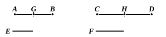
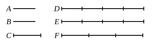
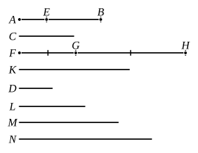
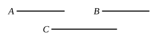
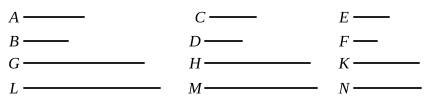
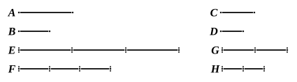
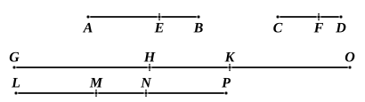

BOOK V. PROPOSITIONS.¶

Proposition V.1
If there be any number of magnitudes whatever which are, respectively, equimultiples of any magnitudes equal in multitude, then, whatever multiple one of the magnitudes is of one, that multiple also will all be of all.
Proposition V.2
If a first magnitude be the same multiple of a second that a third is of a fourth, and a fifth also be the same multiple of the second that a sixth is of the fourth, the sum of the first and fifth will also be the same multiple of the second that the sum of the third and sixth is of the fourth.
Proposition V.3
If a first magnitude be the same multiple of a second that a third is of a fourth, and if equimultiples be taken of the first and third, then also ex aequali the magnitudes taken will be equimultiples respectively, the one of the second and the other of the fourth.
Proposition V.4
If a first magnitude have to a second the same ratio as a third to a fourth, any equimultiples whatever of the first and third will also have the same ratio to any equimultiples whatever of the second and fourth respectively, taken in corresponding order.
Proposition V.5
If a magnitude be the same multiple of a magnitude that a part subtracted is of a part subtracted, the remainder will also be the same multiple of the remainder that the whole is of the whole.
Proposition V.6
If two magnitudes be equimultiples of two magnitudes, and any magnitudes subtracted from them be equimultiples of the same, the remainders also are either equal to the same or equimultiples of them.

Proposition V.7
Equal magnitudes have to the same the same ratio, as also has the same to equal magnitudes.

Proposition V.8
Of unequal magnitudes, the greater has to the same a greater ratio than the less has; and the same has to the less a greater ratio than it has to the greater.

Proposition V.9
Magnitudes which have the same ratio to the same are equal to one another ; and magnitudes to which the same has the same ratio are equal.
Proposition V.10
Of magnitudes which have a ratio to the same, that which has a greater ratio is greater ; and that to which the same has a greater ratio is less.

Proposition V.11
Ratios which are the same with the same ratio are also the same with one another.
Proposition V.12
If any number of magnitudes be proportional, as one of the antecedents is to one of the consequents, so will all the antecedents be to all the consequents.
Proposition V.13
If a first magnitude have to a second the same ratio as a third to a fourth, and the third have to the fourth a greater ratio than a fifth has to a sixth, the first will also have to the second a greater ratio than the fifth to the sixth.
Proposition V.14
If a first magnitude have to a second the same ratio as a third has to a fourth, and the first be greater than the third, the second will also be greater than the fourth ; if equal, equal ; and if less, less.
Proposition V.15
Parts have the same ratio as the same multiples of them taken in corresponding order.

Proposition V.16
If four magnitudes be proportional, they will also be proportional alternately.

Proposition V.17
If magnitudes be proportional componendo, they will also be proportional separando.
Proposition V.18
If magnitudes be proportional separando, they will also be proportional componendo.
Proposition V.19
If, as a whole is to a whole, so is a part subtracted to a part subtracted, the remainder will also be to the remainder as whole to whole.
Proposition V.20
If there be three magnitudes, and others equal to them in multitude, which taken two and two are in the same ratio, and if ex aequali the first be greater than the third, the fourth will also be greater than the sixth ; if equal, equal ; and, if less, less.
Proposition V.21
If there be three magnitudes, and others equal to them in multitude, which taken two and two together are in the same ratio, and the proportion of them be perturbed, then, if ex aequali the first magnitude is greater than the third, the fourth will also be greater than the sixth; if equal, equal; and if less, less.
Proposition V.22
If there be any number of magnitudes whatever, and others equal to them in multitude, which taken two and two together are in the same ratio, they will also be in the same ratio ex aequali.
Proposition V.23
If there be three magnitudes, and others equal to them in multitude, which taken two and two together are in the same ratio, and the proportion of them be perturbed, they will also be in the same ratio ex aequali.
Proposition V.24
If a first magnitude have to a second the same ratio as a third has to a fourth, and also a fifth have to the second the same ratio as a sixth to the fourth, the first and fifth added together will have to the second the same ratio as the third and sixth have to the fourth.
Proposition V.25
If four magnitudes be proportional, the greatest and the least are greater than the remaining two.